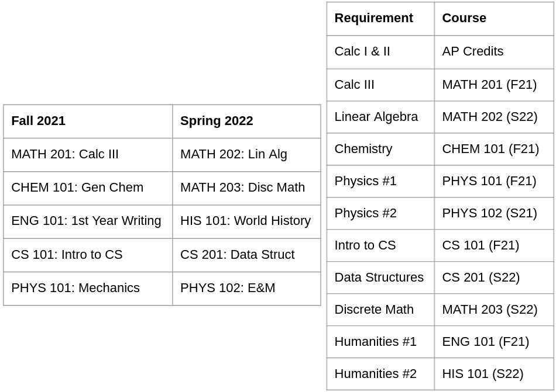
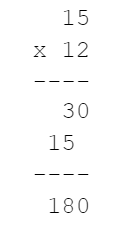

This book is for informational purposes only. Except when an external source is cited, everything in the book is the author’s opinion. The author makes no guarantee about the correctness or accuracy of any content in this book. Furthermore, you may disagree with and/or find certain content offensive.
Read at your own risk. Do not continue reading if you do not accept full responsibility for all actions you take as a result of reading this book. The author is not liable for any damages including, but not limited to, academic failures, career path mistakes, financial loss, feeling upset, and physical/mental injury.
Academics is complicated: there are more courses than you can feasibly take, some classes have projects, some have written homework, some teachers are good, some are horrible, sometimes your peers are brilliant, sometimes they’re dumb. In this chapter, we’ll survey the academics landscape to give you a taste of what to expect. At a high level, we’ll branch into two categories: things you can control, and things you can’t fully control.
Let’s start with things that are in your control: how you act. Once again, goals and execution are of the essence: understand what you have to do for academics, and then execute your plan. Follow these steps and you’ll do great on the things within your control.
First and foremost, always have a plan for what courses you must take to meet your degree requirements. You can do everything else correctly, but if you don’t meet the degree requirements, you’re going to be spending extra semesters in college — the exact opposite of efficiency. From the summer before you start college up until your final semester, always have a course plan in mind. Here’s a simple example for two semesters, although you will want to plan for four years of college:

Plan out what courses you’ll take each semester and identify the course you will take to satisfy each degree requirement. Have a department advisor review your course plan and confirm that it meets the requirements for graduation. You can adjust your course plan anytime your preferences change, but always have a valid plan.
Within your courses, you control the three main sources of grades: homework, projects, and exams. You need to do well on all of them to pass your courses.
All three components of your grade require you to pay attention to the class material. Attend classes in person and make sure you’re awake and actively listening to the professor. It’s easier to have someone feed knowledge to you than trying to discover it all on your own later. Although you can also learn the class material by reading the textbook, I do not recommend them. Instructors write homeworks, projects, and exams, so they only test you on material they explicitly cover in class. If you rely on the textbook, you waste time learning things the instructor deems irrelevant. Worse, you miss topics that the instructor cares about but the book skips. Textbooks are an inefficient way of learning your course material. Unless the instructor assigns homework problems from the textbook or does something else that implicitly requires textbooks, don’t use them and save yourself a few hundred dollars. Pay attention to lectures, but don’t use textbooks unless you have to.
Homework checks your understanding of the lectures. It usually involves written assignments and small programming problems. Start early and work independently first. Once you complete all the problems, find a few friends and compare only the final answers. If your final answers match, then great. If it turns out your answer is wrong, then figure out where you went wrong without looking at your friend’s work. This step is key: you don’t want to lose points on the homework, but you also want to learn from your mistakes and avoid getting caught plagiarizing someone else’s solution. Comparing only the final answer and none of the process to arrive there forces you to learn the material and avoid plagiarism. Apply this process and aim for 100% on your homework assignments. A strong performance on homework confirms your understanding of lecture material.
Projects are large programming assignments that take weeks or months. For many projects, you submit to an “autograder” that runs test cases against your code and your score is based on the number of test cases you pass. Just like homework, ensure you start early. Write your code one part at a time and try to pass one small subset of the test cases each time. Back up your code because if you make some changes and start failing test cases that passed earlier, then that means you wrote incorrect code and should revert to a previous backup. Aim for at least 80-90% on your projects, though 100% is best. Fixing errors in your code will reach a point of diminishing returns, so it’s totally fair if you decide that chasing down the last few points is not worth your time.
An important note about cheating: if the instructor does not allow collaboration on a project, then do not collaborate with anyone. It’s difficult to escape detection because course staff can buy sophisticated software that compares your code against every other submission from the last few years and flag submissions that look suspiciously familiar. Some similarity detectors run sophisticated machine learning algorithms that even see through common attempts to disguise plagiarism, such as renaming variables, changing up the code style, and moving code around. Never cheat because you’ll get caught by the computer sooner or later.
If you put in the appropriate effort for lectures, homework, and projects, then you can almost guarantee a 70% on your exams without any studying. Exams test your understanding of the concepts on your homework and projects. If you consistently score high on homework and projects, then you’ve learned the majority of the exam material and will do well on the exam. If you spend a few hours refreshing your memory on concepts you may have forgotten and doing some practice problems before the exam, you’ll squeeze out the remaining 30%.
If you didn’t do well on the homework or projects, then you’re unlikely to do well on the exams. Cramming a semester’s worth of material into a few days is no remedy for slow and steady learning throughout the semester. If you end up in this situation, reflect on what went wrong, ensure you don’t fall behind on homework and projects, and potentially retake the course.
A common complaint from students is that they learn how to compute “10+10=20” in class, they study it well, and then the exam asks them to compute “1923785+3857838.” They fail the question on the exam and complain that it’s totally unfair. In my opinion, it’s completely reasonable: challenging exam questions differentiate those who learn the intuition behind the concepts from those who just regurgitate facts.
One piece of advice teachers and advisors keep telling students is, “don’t just memorize things and regurgitate on the exam — make sure you understand the material.” But most teachers fall short and never explain what “understand the material” entails. I’ll fill in the gap here: you’re supposed to learn the intuition — “why does a concept matter?” and “why does the concept work?”
If someone asks you, “what’s five time six?” you respond “thirty” because you’ve memorized your times tables. Have you ever asked yourself why it’s thirty? Going a little further: why do we even care about multiplication? These questions get at the intuition behind multiplication.
Here’s the intuition: millenia ago, someone got tired of saying “five plus five is ten. Ten plus five is fifteen … twenty-five plus five is thirty. Finally got it!” They figured out they could shortcut this tedious addition with a multiplication table. That’s why “5 x 6 = 30” and why we care about multiplication.
Back in elementary school, you memorized your multiplication tables up to “9 x 9 = 81”. To multiply larger numbers such as “15 x 12”, your work looked like this:

Most people just memorize the multiplication process. To go beyond regurgitation, here are some questions to pique your intuition:
Take some time to think about these questions yourself. Once you can answer them, then you’ve successfully learned more intuition behind multiplication.
As a metaphor, your college instructors will show you why “15 x 12 = 180” and then expect you to extend that reasoning to compute “1982 x 456” on your homework, projects, and exams. When your teacher presents a new concept, make sure you can explain the intuition:
Realizing why you are even learning the concept in the first place shows you the big picture. Knowing why the concept works ensures you can extend it to new scenarios. Learning intuition enables you to truly understand a concept.
So far, the topics we’ve covered are more or less under your control. If you set the proper goals, execute, and master the things under your control, you’ll do very well. You’ll avoid any surprises with your degree requirements, get good grades, and graduate well-equipped for a full-time job.
Our second set of topics covers things outside your control: how other people act. While you’re trying to handle the things under your control, other people inject themselves into your process and make your life easier or more miserable. By analyzing your interactions with them as transactions, you can avoid the bad eggs who drag you down and identify the people who lift you up.
The average professor at your college is an average instructor. Your professors have PhDs in computer science — not PhDs in teaching 18-22 year olds. They’re some of the smartest people when it comes to their research, but on average, they aren’t amazing at communicating knowledge. You want to learn from professors who communicate the best, and avoid the ones who can’t communicate.
Although professors find Rate My Professors (https://www.ratemyprofessors.com) obnoxious, the website is a solid resource for determining the quality of an instructor. When you go to college, you are purchasing lectures for a hefty price. Just as you read reviews when shopping online, it makes sense to read the reviews and pick out the best professor. Rate My Professors provides anonymous ratings by students of most instructors.
In general, a rating of 4.0 or higher means the instructor teaches well, 3.0 to 4.0 is around average, and a rating less than 3.0 indicates you should avoid the professor. For each course you plan to take, look up all the professors teaching it and try to attend the lecture of the highest-rated professor. You can also ask other students for their opinions, but you won’t collect as much data as RateMyProfessor offers. Finally, if you don’t have the ability to choose your professors, consider sneaking into the lecture of the best professor anyways.
Don’t just believe what Rate My Professors says though; actively evaluate professors yourself. If your professor has an accent, can you still understand him/her? Does the professor prepare for lectures? Do the professor’s lectures help you learn the intuition behind the concepts? Switch to a different lecturer if you aren’t learning well.
Evaluate teaching assistants (TAs) in a similar fashion to professors. TAs are undergraduate or graduate students who teach a supplemental “recitation” session to review lecture material. For the most part, recitation is not important to attend because it is simply a restatement of a lecture; however, you do not want to miss the few TAs who help reinforce your intuition of the lecture concepts.
Most teaching assistants are poor teachers; instructors choose TAs based on their grade in the class, if they personally know the TA, and a variety of other factors not related to teaching. Few TAs are hired based on ability to teach. Most of the time, your TA will simply regurgitate lectures so there’s no point wasting time with them unless you’ve missed a lecture. TAs can be worse than that though: personally, I’ve encountered TAs teaching incorrect material, arriving at wrong answers when reviewing questions on a recent exam, or not even knowing what the ongoing class project is about. I’ve even had to explain as a student to a TA why his autograder for the class project he designed was completely incorrect — after he already explained his incorrect solution to countless people during office hours. In general, there is no value in spending an hour learning from an incompetent student.
In my entire duration of college, I had one stellar TA who led an amazing recitation. He usually came prepared with new examples that the instructor never mentioned and used those to reinforce the intuition behind concepts from lecture. Sometimes, he’d even come prepared with his own code examples to illustrate the concepts. This stellar TA augmented the lecture instead of repeating it, so I made sure to attend every one of his recitations.
If you don’t want to miss out on a stellar TA, go to multiple recitations towards the beginning of the course and evaluate each TA’s competency: does the TA appear to understand the material? If you ask questions, is the TA able to answer them? Does the TA prepare? Does the TA help reinforce the intuition behind lecture concepts? If the answer is yes to most of these, then it’s in your interest to attend the recitation. If not, then skip.
Outside of lectures and recitations, you frequently learn with your peers. Good peers work with you to create synergy and improve your efficiency. Bad peers work against you and drag you down. Your choice of peers affects your academic efficiency, so choose wisely.
A general rule of thumb is to avoid being miles ahead of others in the group, but also don’t be miles behind everyone else. If you are the smartest in a group, you won’t learn anything working with people who are struggling on a concept you mastered a week ago. If you are the slowest in a group, you won’t understand what other people are talking about. Work with people of similar academic talent so that you are all on the same wavelength.
As an example, suppose you have a group project. If you are the smartest in the group, you’ll finish your work too soon. Your teammates may deliver worse quality code than you, and you’ll waste time patching up their work to meet your higher standards. If you are the slowest in the group, you’ll take longer than everyone else. Occasionally, someone might be willing to take the time to help you learn; if you’re lucky to be in this situation, take full advantage of the learning opportunity. Most times, you’ll fall under the spotlight, and others may do your work for you and deprive you of your learning opportunity. If you work with people of similar academic prowess, you and your teammates will help each other through similar struggles and gain a fulfilling learning experience.
You can get a good sense of how well someone’s academics are based on their grades. Try eavesdropping and you might overhear them talking about a recent test score. Try snooping online or talking to their friends. Check if they made the Dean’s List or if they have membership in an honor society with a GPA requirement.
Beyond raw academic talent, there are always people you simply “cannot” bear to work with. Usually it’s arrogant classmates, but some people can also be subtly racist or sexist, or just never learned manners. Avoid them if you are able to because these outliers induce stress; however, sometimes you get assigned teammates for projects and cannot escape an unsavory classmate. In this scenario, review the transaction at stake: if you suppress your feelings of disgust and collaborate with your repulsive classmate, then you receive success on your project. Remember that at any time, you can rein in your unsupervised mind and choose to feel different about your teammate. Trading temporary feelings for academic progress is a good deal, so I encourage you to accept these types of transactions.
If you attend a small school, you may have a dedicated scheduler who guarantees you’ll get into all the courses you want, but doesn’t allow you to pick your instructors. In this situation, there’s not much you can do besides trying to figure out which professors are teaching what class and signing up for courses with the most number of competent instructors.
If you attend a large school where registration is first-come-first-served based on your seniority at the school, you’ll have more flexibility to choose your instructor, but also have to deal with waitlists. Make sure you register for your courses as soon as you are permitted. Set reminders on your phone and open up the registration website in advance — being a few minutes late could mean you end up on the waitlist instead of enrolled in the class. If classes are full, join the waitlists and join as many waitlists as you’d like. You can always decline your spot later on.
When the semester starts, attend your waitlisted classes. There are two motives for doing so. One, if you stay after class and chat with the professor about your “extenuating” waitlist situation, they just might let you enroll. Two, you stay up to date on the material so that once you get off the waitlist, you won’t have to catch up.
Finally, create backup course plans in case class registration doesn’t work out in your favor. Double check that every course you take brings you closer to meeting your degree requirements.
It also helps if you end up in courses with friends of similar academic caliber. You’ll immediately have people with whom to study, compare homework and do projects. Having a friend group in a course greatly reduces the risk of having to deal with bad peers.
Sometimes, you just can’t get the professor or TA that you want or your class ends up at an inconvenient time. If other classes are large enough, then sneak into another lecture or recitation. Although you might feel uncomfortable doing this, especially if the room is full and you are taking a limited physical seat from another enrolled student, supervise your emotions and analyze the transaction from a logical standpoint. If the class is large, then there’s no time to ID every student and evict you for not being registered. There are no repercussions and you benefit from having a better teacher or a better lecture time when you’re more awake and focused.
In this chapter, we surveyed the academic landscape. For things under your control, success comes from proper goals and execution. To achieve your computer science degree, plan out the courses you need to take. To do well in your courses, start your homework and projects early and do a thorough job to ensure that you naturally pick up the important material on the exams. Finally, focus on the intuition behind the lecture ideas to supercharge your learning.
For things outside your control, evaluate what other people are offering and pick the best transactions. Actively evaluate your teachers and teaching assistants and choose the best instructors who explain the concepts and intuition well. Similarly, evaluate your peers and work with people at a similar level of academic prowess so that you aren’t getting carried by smarter peers and you aren’t getting dragged down by less-talented peers. Finally, do your best to register for classes with the best teachers, TAs, and peers; if possible, don’t be afraid to sneak into another class that suits you better.